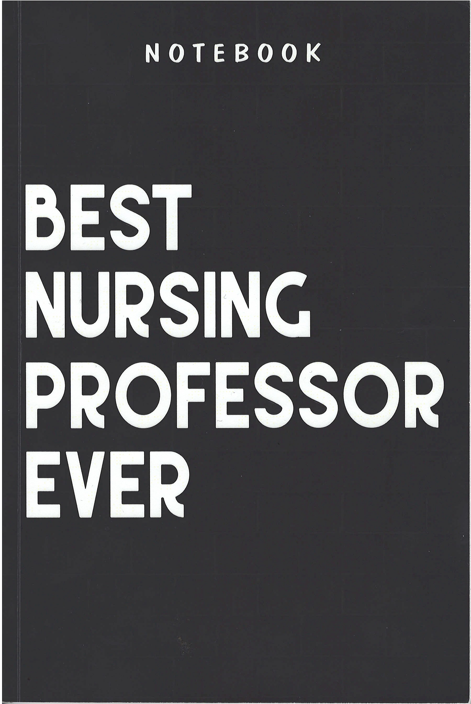

"Best Nursing Professor Ever" — BScN Cohort 1, April 2023
‹
›
Faculty — HBSN Nursing Program
School of Health, Wellness and Sciences · Georgian College · Since 2011
Anatomy & Physiology · Pathophysiology · Research Ethics
"Critically reflective teaching happens when we identify and scrutinize assumptions that undergird how we work. The most effective way to become aware of these assumptions is to view our practice from different perspectives."
— Stephen Brookfield
I am a full-time faculty member in the HBSN program at Georgian College, where I have taught since 2011. My teaching focuses on the biomedical sciences foundational to nursing practice (e.g., Anatomy & Physiology, Pathophysiology). I teach four of these courses and substantially developed them from the ground up using open educational resources (OER).
My academic background spans medicinal chemistry (Ph.D., University of Toronto, 2001), post-doctoral research at the University of Chicago, and 5+ years of faculty and research experience at the University of Windsor before joining Georgian. I hold five American patents, published more than 20 peer-reviewed scientific articles (including in prestigious journals such as Nature and the Proceedings of the National Academy of Sciences), and have served as Chair of Georgian College's Research Ethics Board (GCREB) since 2023.
As I enter the FRAME process, I find myself reflecting on a teaching career defined by continual growth, adaptation, and reinvention from an academic researcher to nursing science educator. This reflective process offers me an opportunity to look more carefully at how my experiences, values, and teaching practices have evolved over time. I remain deeply committed to strengthening my reflective practice in ways that support student success, enrich the students' learning experiences, and contribute meaningfully to the mission of the program and Georgian College.
My teaching philosophy is grounded in care, connection, and student-centred learning. As a professor in a baccalaureate nursing program, I see teaching as both an academic and relational responsibility. I care deeply about my students, want them to succeed, and strive to do everything within my power to support their growth as novice learners and future registered nurses.
Although I am an introvert by nature, I find great energy and purpose in the classroom. I aim to create a warm, welcoming, and respectful learning environment where students feel seen, supported, and challenged. I believe students learn best when they are actively engaged, so I use case-based learning, discussion, problem-solving, and peer-to-peer collaboration to help them connect theory to nursing practice.
I also believe motivation is one of the most important predictors of student success. At the same time, I recognize that first-year students are still learning how to take responsibility for their own learning journey. My role is to guide them toward confidence, independence, and professional accountability.
As John Dewey is often paraphrased, "We do not learn from experience; we learn from reflecting on experience." This belief shapes my own teaching practice. I continually reflect, adapt, and incorporate useful technologies, including VR and AI tools, to enrich learning and prepare students for contemporary nursing practice.
The Personal Compass is a reflective tool for understanding the values, tensions, needs, and aspirations that orient your teaching journey. Complete each quadrant with honesty.
What excites me most as a nursing educator is seeing students begin to recognize their own potential. I find great meaning in those moments when a concept that once felt abstract suddenly becomes relevant to their nursing practice — when cardiovascular physiology helps a student better understand vital signs; when pathophysiology explains a client's clinical presentation; or when anatomy becomes more than memorization and begins to shape clinical judgment. The biomedical sciences are not separate from nursing practice; they provide the foundation for safe, client-centred assessment, sound clinical judgment, and meaningful patient care.
I am also energized by the opportunity to use technology thoughtfully to support student-centred learning, whether through virtual reality, interactive resources, or emerging tools such as AI chatbots. What excites me is not technology for its own sake, but its ability to spark curiosity, deepen understanding, and help students see themselves as knowledgeable, engaged, and developing members of the nursing profession.
If I am being honest about what occupies my thoughts in the quiet hours of the night, it is student motivation that concerns me most; not because I doubt my students' capacity or commitment, but because I see just how much weight and burden they are carrying. The students who enter my classrooms are rarely navigating their education in isolation; they are balancing financial hardship, family obligations, and personal health challenges, often all at once, and frequently while working substantial hours simply to remain enrolled in the program. Asking these students to engage deeply with the rigorous science content while their attention is justifiably divided across the pressing realities of their lives is a problem that I have not resolved, and perhaps never will. Layered atop this is a newer and rapidly intensifying challenge: the pervasive, indiscriminate use of AI has made the design of meaningful online assessments genuinely difficult, forcing me to continually rethink how I evaluate authentic learning in an environment where the line between a student's own reasoning and the AI's output has grown increasingly blurred. And these concerns do not exist in isolation; they compete for my finite time and energy against a host of other obligations that pull me in multiple directions. Demands such as the substantial preparation that good teaching requires, my responsibilities as Chair of the GCREB, the research projects that I am committed to seeing through, the new online learning tools I am building to complement the current OER resources that, beyond the textbook itself (if present), remain conspicuously sparse, the imperative to prepare students early so that they pass the NCLEX on their first attempt, and the steady drumbeat of administrative work tied to accreditation and program renewal. Any one of these tasks would be demanding on its own. Together, though, they can feel genuinely overwhelming, and I would be dishonest with myself to suggest otherwise.
And yet these are not the worries of someone who has given up; they are the worries of someone who cares deeply, and that distinction matters enormously to me. Each of these challenges also functions as a source of motivation, a reason to keep working, experimenting, and refining rather than lapsing into resignation. I have come to accept that my role is not to find cures for these challenges (such cures rarely exist) but to seek thoughtful, partial, iterative solutions, and to do so in genuine collaboration with colleagues who share both my concerns and my conviction that the work is worth doing well. I take real comfort in knowing I am not facing any of this alone, and that I have a whole faculty team behind me. If I am still awake thinking about how to help my students succeed, then I believe that I am still in exactly the right place and that, more than any magical solution, is what gives me hope for the work ahead.
When I reflect on what would help me become a better educator, my needs cluster around a single conviction: students learn best through active, hands-on, kinesthetic engagement. To that end, I would benefit enormously from greater resources to develop interactive OER materials (e.g., virtual physiology experiments such as blood typing simulations) that can bring abstract physiological concepts to life for students who learn by doing. Equally, I find myself wishing for dedicated budget dollars, scarce as I know they are, to acquire the equipment that makes real experimentation possible in the classroom: an electromyograph to let students see their own muscle activity, spirometry apparatus to measure lung function firsthand, a 3-lead ECG to reveal the electrical activity of the heart in real time. These are pedagogical investments because the moment a student watches their own physiology unfold before them is the moment the content stops being something to memorize and instead becomes something they understand deeply. Beyond equipment, I aspire to establish a regular rhythm of peer feedback on the courses I teach. This kind of constructive collegial review will help me continually revise and strengthen my learning resources rather than letting them ossify. And perhaps most elusively, I need time: quiet, protected time to think deeply about scholarship and research, which grows increasingly difficult to find amid the relentless pace of the teaching semester. I am keenly aware of the budgetary realities that constrain this institution, and I want to be clear that I do not voice these needs from a place of dissatisfaction, but from a place of aspiration. I am genuinely grateful for all that I already have at my disposal — the resources (e.g., CTL), my faculty peers, and the institutional support that have helped me grow into the educator that I am and hope to become. Regardless of what additional resources may or may not materialize, I remain committed to making fuller, more creative use of what is already within my reach, so that I can continue to fulfill my mandate to my students with the care and rigour they deserve.
When I imagine where I want to be three to five years from now, my aspiration is simple and perhaps even trivial-sounding, though I have come to believe it is anything but. I want to be better at everything that matters in my job: better at helping my students learn, better at carrying out my administrative responsibilities, better at striking that ever-elusive balance between teaching and scholarship. While my concrete, measurable objectives belong in the Goals section that follows, this aspiration is something larger and more difficult to quantify. It is a commitment to continual growth across every dimension of my practice. My ultimate dream, the one that animates all the rest, is to see every student succeed: to watch them grow into caring, compassionate RNs who go on to find gainful, meaningful employment in roles they genuinely love and in which they have room to flourish. Of course, I hold the secondary goal that all of my students pass the NCLEX on their first attempt but I have made peace with a gentler and, I think, wiser measure of success: that each student achieves whatever goal they set for themselves when they first walked through the doors of Georgian, and that they arrived there without ever compromising the values that brought them to this profession in the first place. More than anything, I aspire to help students recognize the immense, often unseen potential within themselves; to help them dig deep and unlock the gifts and talents that are already. In the simplest terms, my central aspiration is to become better at motivating and supporting our nursing students. They give so much of themselves to this demanding path, and at the very least, they deserve nothing less than that from me — and I intend to spend the coming years striving to become the best version of myself.
The Georgian College Faculty Competency Framework identifies eight core roles that educators embody. Below I map where I see myself — emerging, performing, or transforming — in each role, and link my reflective entries.
Click any role card to jump to its reflection entry below.
Each entry below captures a moment of growth, challenge, or insight across the eight faculty roles. Artifacts, evidence, and narrative are added here as the journey unfolds.
One of the most practically impactful decisions I made in developing the science courses in the HBSN program was the deliberate transition away from costly commercial publisher textbooks toward Open Educational Resources (OER) in Anatomy and Physiology 1 and 2, and Pathophysiology 1 and 2. The impetus was straightforward but urgent: the cost of traditional science textbooks has risen so much that they have reached a stage where they are unaffordable for many students. A significant number of students in the BScN program balance full-time study with paid employment to meet basic living costs, and the persistent pattern of students arriving to class without the required textbook was not a matter of academic disengagement, it was a matter of economic necessity. For that reason, I adopted the Anatomy and Physiology, 2nd edition from OpenStax (openstax.org), a peer-reviewed, freely accessible OER textbook for the A&P courses (NURS 1016 and 1020). For pathophysiology, where no comparable OER textbook exists, I turned to the Merck Manual, Professional Edition (merckmanuals.com) which is a clinically authoritative, freely available resource that provided the content at a depth and relevancy appropriate for BScN nursing students.
The transition from traditional textbook to OER, however, was far from effortless. Without the supplementary packages that accompany commercial textbooks (e.g., slide decks, image banks, test question repositories, videos, and formative assessment tools), I had to rebuild the entire instructional scaffolding of all four courses largely from scratch. Specifically, I had to carefully curate Creative Commons-licensed diagrams and images, develop original slide presentations, and identify freely available videos and interactive resources to replace what a publisher's package had previously provided. It was painstaking, time-consuming work that demanded patience and creativity, but it was also, ultimately, deeply rewarding. The student response was almost uniformly positive, and the feedback I received confirmed that the decision to transition to OER had been the right one.
One student's comment that has stayed with me as a defining moment in this journey is when they shared that the money they would otherwise have spent on textbooks could now be spent on rent. That single remark crystallized, more powerfully than any metric could, what equitable course design actually means in practice. It means that a student does not have to choose between their education and their basic needs. I remain committed to continuing to refine and enrich these OER-based courses, and I see this work not simply as a cost-saving measure but as a concrete expression of the equity values that live in the HBSN/HBNA programs.
My identity as an educator has been profoundly shaped by my identity as a researcher, though the nature of that research has evolved considerably over the course of my career. My earlier academic life was devoted almost exclusively to discovery-based research in medicinal chemistry: a domain characterized by the pursuit of knowledge for its own sake, removed from the immediate concerns of the classroom. As I matured professionally, however, I found myself increasingly drawn to a different kind of inquiry: one oriented not toward molecules, but toward minds and specifically how students learn, and how evidence can be used to design better educational experiences. This intellectual shift brought me to collaborate with a group of like-minded colleagues at Georgian College in securing a $955,200 grant from the Government of Canada's Future Skills Program, administered through the Future Skills Centre, to support the institution's Digital Transformation Strategy, a campus-wide initiative integrating extended reality (XR) technologies to enhance teaching, learning, and inclusivity across Georgian College's seven Central Ontario campuses. As a Co-Investigator on the human anatomy and physiology component of this larger project, I set out to investigate a focused but pedagogically consequential question: does the modality of virtual reality, specifically, the difference between fully immersive VR using headsets and desktop-based VR on a personal computer meaningfully affect student motivation in learning anatomy and physiology?
The study, recently published in the Canadian Journal of Learning and Technology (Thadani et al., 2025), recruited 21 students from the nursing, paramedic, and biotechnology-health programs and employed a quasi-experimental design using four subscales of the Intrinsic Motivation Inventory (IMI) as the primary outcome measures. The data were revealing: students in the immersive VR group reported statistically significantly higher scores on both the interest/enjoyment subscale (U = 20, z = -2.049, p = .043) and the perceived competence subscale (U = 12, z = -2.704, p = .006), indicating that immersive VR not only made anatomy more engaging, but also strengthened students' belief in their own capacity to learn the material; a key behavioural predictor of intrinsic motivation. No significant differences were found on the pressure/tension or perceived choice subscales, suggesting that students in both conditions felt equally in control of their learning and were not unduly stressed by the assigned technology. These findings, while appropriately qualified by the study's small sample size and the challenges inherent in conducting controlled research within a live academic environment, align with a growing body of literature documenting VR's potential to enhance spatial understanding and motivation in anatomy education. The study also surfaced important lessons about the challenges of educational research itself: low instrument completion rates, volunteer bias, and the difficulties of participant recruitment in demanding health science programs. I consider these insights as valuable as the primary findings as I design future investigations.
Conducting this research has genuinely changed how I think about evidence and pedagogy. It has deepened my appreciation for the complexity of learning environments, sharpened my methodological humility, and reinforced my conviction that good teaching and good research are not separate vocations but mutually informing practices. Today, my scholarly attention has turned to the intersection of artificial intelligence and nursing licensure preparation. Specifically, I have started researching the development of AI agent-driven systems capable of generating and delivering tailored, next-generation NCLEX-style questions to help students prepare for and pass their licensing examination on their first attempt. This work is ongoing, and its eventual findings will directly inform our program's NCLEX preparation strategy. I am guided throughout this process by the recognition that the Canadian nursing competency framework identifies the scholar role as one of the core competencies of a registered nurse. This role is a reminder that the commitment to inquiry, evidence, and continuous learning is not merely an academic virtue, but a professional obligation that begins in the classroom and extends across an entire career.
Inclusive practice in the classroom, as I have come to understand, is rarely instituted by a single dramatic change. Rather, it is more often a steady accumulation of deliberate choices, each one signalling to students that they belong here and that their success matters. One instance that captures this for me has been my decision to move away from costly commercial textbooks toward Open Educational Resources across my science courses. This change is rooted in the recognition that many of my students face real financial hardship, often balancing employment and family responsibilities alongside full-time study. By removing the textbook as a financial barrier, I witnessed something meaningful: students who might otherwise have gone without the required course materials now arrived with equal access to the resources they needed to succeed, and the quiet stress of that particular choice is now lifted from their shoulders. Inclusion, in that moment, was not abstract; it was the simple, concrete fact of a level starting line.
Building on this, I have intentionally expanded the case-based patient scenarios in my courses to reflect the genuine cultural diversity of the communities our graduates will serve. I have begun to confront, openly and directly, the deficiencies embedded in long-standing Eurocentric clinical assessment tools. For example, teaching students why relying on skin phototype classifications for melanoma screening can fail patients with darker skin tones, and what culturally responsive, evidence-informed practice demands instead. These conversations will hopefully change how my students see their future clients and patients, and how they see the responsibility they carry as nurses to question inherited assumptions rather than accept them uncritically.
I am the first to acknowledge that this work is far from finished. There remains a great deal I have yet to learn and incorporate but I approach what lies ahead with a firm commitment to researching the relevant scholarship in each of these areas so that I can continue incorporate inclusive, culturally responsive pedagogy more deeply into my courses. Every step in this direction, however modest, makes the classroom a little more welcoming and a little more just, and that is a journey I am proud and eager to continue.
Serving as Chair of the Georgian College Research Ethics Board (GCREB) has been one of the most formative experiences of my professional life. This role places me at the intersection of nearly every discipline at the college, reviewing research that ranges from nursing and counselling psychology to business, paralegal studies, and human services. This cross-college, cross-disciplinary vantage point has reshaped my sense of collaboration. I have learned that upholding shared ethical standards is far less about enforcement than about partnership. From the outset, I have worked to promote a genuine culture of research at Georgian, and much of that work has been deliberately practical such as streamlining our application forms, sharpening the review process to concentrate on what truly matters (participant risk and ethical integrity) rather than stylistic or minor methodological concerns, and meaningfully reducing review times so that the Board is thought of as an enabler of scholarship rather than an obstacle to it.
Central to this shift has been a commitment to direct, early, and collegial communication with applicants. When disagreements arise, I have found that a proactive conversation almost always resolves what a formal letter would only inflame. I have learned that navigating power and disagreement via the authority vested in a review board is best exercised with humility and transparency. Throughout the review process though, we have never wavered in our adherence to the standards of the TCPS 2. I take particular care to frame our guidance constructively, helping researchers minimize and mitigate risk to participants through concrete suggestions rather than simply flagging deficiencies. Beyond reviewing applications, I have invested in the Board itself by developing professional development opportunities for our members and actively recruiting well-qualified colleagues who are diverse in both subject-matter expertise and research experience, because I believe robust ethical review depends on genuinely different perspectives meeting around a shared commitment.
It is demanding work, often invisible, and rarely without its tensions but it is deeply rewarding, and my greatest satisfaction comes from knowing that, in a small but meaningful way, I am helping to nurture a culture of research and scholarship at Georgian College that will outlast my tenure and benefit students and faculty alike. I would be remiss, however, to claim any of this as my own accomplishment, for I could not have done a single part of it without the guidance and collaborative spirit of Prem Batten, the GCREB Assistant, who truly holds everything together. We work as a genuine team, and I have consistently sought out and relied upon her expertise, her institutional wisdom, and her steady judgment. It is a partnership for which I am deeply grateful, and without which the Board simply would not function as it does. Thank you Prem.
My work as a Digital Explorer flows directly from a conviction that students learn most deeply not by passively absorbing information, but through active, engaged participation in their own learning. It is this belief that has led me to develop a growing collection of interactive virtual simulations built with the assistance of AI coding agents. These simulations will be designed specifically to fill the gaps in the Open Educational Resources I use across my Anatomy and Physiology (NURS 1016, NURS 1020) and Pathophysiology (NURS 1017, NURS 1021) courses. While the OER textbooks themselves are excellent, the supplementary materials that typically accompany commercial publisher packages (e.g., interactive tools, simulations, and rich formative activities) remain conspicuously sparse, and I have come to see this gap not as a limitation to lament but as an invitation to create. Although these digital simulations are not, strictly speaking, the hands-on kinesthetic experiences I would ideally provide, they nonetheless offer a depth of engagement and immersion that simply reading a textbook or listening to a lecture cannot match.
For me, the pedagogical moment that matters most arrives when a student can manipulate a physiological variable and watch the body respond in real time. Building on my existing Digital Explorer projects such as the virtual blood typing experiment (see link below), I am working towards developing a small but purposeful library of simulations embedded meaningfully across all four courses that I teach. These simulations will not exist as novelties but as deliberate pedagogical instruments chosen because I believe they spark curiosity, deliver immediate feedback, and render abstract physiological concepts immediately tangible and comprehensible. I remain mindful, too, that technology must always serve learning rather than the reverse, and I am committed to evaluating these tools honestly rather than assuming their value. I regard myself as a Digital Explorer not because of innovation for its own sake, but innovation in the service of deeper, more durable, and more equitable student learning.
My scholarship spans discovery research in chemistry and active investigation of technology-enhanced learning in nursing education. Below are selected works and ongoing scholarship activities.
Goal setting is central to the FFR process. Below I map my professional growth intentions across the three-year cycle, grounded in where I am and where I aspire to be.
Professional development is a cornerstone of the Reflector and Researcher roles. Below are formal learning experiences that have shaped my practice.
The FFR process asks each faculty member to reflect on how they have incorporated EDIB principles and Indigenous Ways of Knowing into their curriculum, assessment, and student engagement practices.
Student voices are among the most meaningful forms of evidence of teaching effectiveness. This collection includes a special handwritten gift from the first BScN cohort, and written comments from Georgian College Course Feedback Surveys across multiple courses and years.
About this collection: The testimonials and course feedback below span Winter 2023 through Fall 2024 across NURS 1016, 1017, 1020, and 2020. Click any card to browse selected student quotes, or use the PDF link to view the full survey report.

Peer observation and feedback is a cornerstone of reflective teaching practice. The entries below document formal and informal peer review of my teaching, connecting to the Reflector and Collaborator roles in the Faculty Competency Framework.
[Add your reflections and contributions as Chair of the Georgian College Research Ethics Board here. Consider: your leadership approach; notable decisions or policy work; how chairing the GCREB has shaped your understanding of research integrity; the learning resources you developed for applicants; and how this role connects to your identity as a researcher-educator.]
Chair, GCREB — January 2023 – Present
Member, GCREB — September 2021 – December 2022
[Document your contributions to program development at Georgian College. This could include your role in building the HBSN program from the ground up, developing program-level learning outcomes, working toward CNO approval, or contributing to program review and renewal processes. What was your vision for the program? What challenges did you navigate? What are you most proud of?]
[Showcase your curriculum design work here — particularly the four nursing science courses you have developed or are redeveloping (NURS 1016, 1017, 1020, 1021, and 2020). Describe your design principles, your use of OER (OpenStax), your approach to aligning assessments with learning outcomes, and any innovations you've introduced. Include course syllabi, sample learning activities, or assessment rubrics as artifacts.]
[Document your contributions to accreditation and quality assurance processes. This may include CNO program approval work, curriculum mapping to professional competency standards, preparation of self-study documents, or participation in site visits. Reflect on what accreditation processes have taught you about program quality and accountability in professional nursing education.]
[List and reflect on your committee contributions at Georgian College and beyond. Consider: program-level committees, school-level governance, cross-college initiatives, and any external committee or advisory roles. For each, describe your contribution and what you gained. Committee work is evidence of your Collaborator and Changemaker roles within the Faculty Competency Framework.]